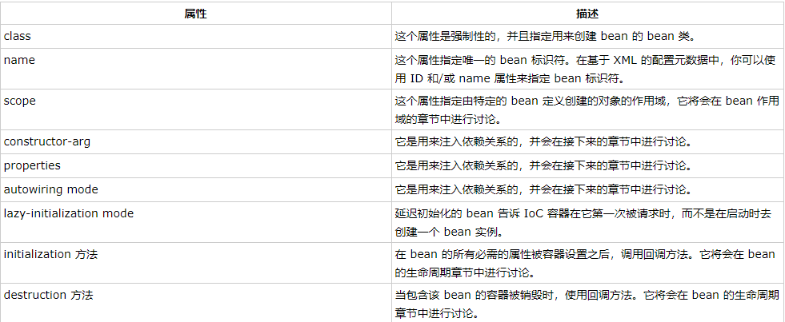

Spring中常见注解
-
@Component:标注一个普通的Spring Bean类
-
@Respository：标注一个DAO的组件类
-
@Service：标注一个业务逻辑组件类
-
@Controller：标注一个控制器组件类
-
@Autowired：可用于为类的属性、构造器、方法进行注值
Spring技术：
- 依赖注入（DI）：控制反转（IOC）的一种具体实现
注入方式有：通过构造函数传递参数的方式，通过使用setter方法的等等
-
面向切面的编程（AOP）：一个程序中跨越多个点的功能称为横切关注点 ，独立于业务逻辑，如日志记录、声明性事物、安全性以及缓存等等。
AOP将横切关注点从他们所影响的对象中分离出来，DI则将应用程序彼此分离出来。

Spring Hello World实例：
首先定义一个HelloWorld类，有message属性以及相关的setter和getter方法，然后在MainApp文件中使用ClassPathXmlApplicationContext(“xxx.xml”)创建应用程序的上下文，创建初始化beans的配置文件所有的对象，之后可以通过getBean方法获取所需要的bean，根据bean的ID获取对象。在xml配置文件创建自己需要的实例化对象，从而不需要修改HelloWorld.java和MainApp.java文件。
Spring的BeanFactory容器：常用在移动设备和applet的应用中,最常用的XmlBeanFactory，通过xml加载初始化bean
Spring的ApplicationContext容器：
常用的：
-
FileSystemXmlApplicationContext：需要提供xml文件的绝对路径，该容器会从xml中加载已被定义的bean，
-
ClassPathXmlApplicationContext：在CLASSPATH环境变量中搜索XML配置文件，该容器就会从xml中加载配置文件，
-
WebXmlApplicationContext：在web应用程序的范围内加载xml配置文件
Bean：
bean是一个被实例化，组装，并且被Spring IOC容器所管理的对象。bean是由容器通过配置元数据创建的。
配置元数据对应bean定义的属性：

Spring配置元数据：
XML方式：
<?xml version="1.0" encoding="UTF-8"?>
<beans xmlns="http://www.springframework.org/schema/beans"
xmlns:xsi="http://www.w3.org/2001/XMLSchema-instance"
xsi:schemaLocation="http://www.springframework.org/schema/beans
http://www.springframework.org/schema/beans/spring-beans-3.0.xsd">
<bean id="helloWorld" class="com.tutorialspoint.HelloWorld" lazy-init="true" lazy-method="..." destroy-method="...">
<property name="message" value="Hello World!"/>
</bean>
</beans>
基于注解的配置方式：
- @Require：应用于bean属性的setter方法。
- @Autowired：应用于bean属性的setter方法和非setter方法，构造函数和属性。
- @Qualifier：通过指定确切的将被连线的bean，通常和@Autowired一起使用来删除混乱。
- JSR-250 Annotation
在IoC容器可以看到实例。
基于Java的配置方式：
以上两种方式都是需要配置xml的基础上编写spring bean，但是基于java config，可以在不用编写xml上完成spring bean的配置。
- @Configuration：表明该类可以使用Spring IoC容器作为bean的定义来源
- @Bean：将方法名作为bean的id
- @Import(xxx.class)：允许加载另外一个配置类@Bean定义
- 生命周期回调：@Bean(initMethod="xxx", destoryMethod="xxx")
- @Bean注解下可以使用@Scope注解指定Bean的范围
IoC容器
Bean的scope属性：

<bean id="helloWorld" scope="singleton">
<property name="message" value="Hello World!"/>
</bean>
Bean的生命周期：
初始化回调：类可以通过实现org.springframework.beans.factory.InitializingBean 的void afterPropertiesSet()，也可以通过XML的配置元数据中init-method指定一个void无参方法。
public class ExampleBean implements InitializingBean {
@Overwrite
public void afterPropertiesSet() {
// do some initialization work
}
}
<bean id="exampleBean"
class="examples.ExampleBean" init-method="init"/>
//在类中定义一下方法
public class ExampleBean {
public void init() {}
}
销毁回调：通过可以通过实现org.springframework.beans.factory.DisposableBean的destory方法，亦或者在xml中配置destory-method属性
public class ExampleBean implements DisposableBean {
@Overwrite
public void destroy() {
// do some destruction work
}
}
<bean id="exampleBean"
class="examples.ExampleBean" destroy-method="destroy"/>
public class ExampleBean {
public void destroy() {
// do some destruction work
}
}
Spring的BeanPostProcessor:Bean的后置处理器
BeanPostProcessor接口定义了回调方法，可以通过这些方法实现自己的实例化逻辑，依赖解析等等，也可以对bean对象实例进行操作。
/*HelloWorld.java*/
public class HelloWorld {
private String message;
public void setMessage(String message){
this.message = message;
}
public void getMessage(){
System.out.println("Your Message : " + message);
}
public void init(){
System.out.println("Bean is going through init.");
}
public void destroy(){
System.out.println("Bean will destroy now.");
}
}
/*InitHelloWorld.java*/
import org.springframework.beans.factory.config.BeanPostProcessor;
import org.springframework.beans.BeansException;
public class InitHelloWorld implements BeanPostProcessor {
public Object postProcessBeforeInitialization(Object bean, String beanName) throws BeansException {
System.out.println("BeforeInitialization : " + beanName);
return bean; // you can return any other object as well
}
public Object postProcessAfterInitialization(Object bean, String beanName) throws BeansException {
System.out.println("AfterInitialization : " + beanName);
return bean; // you can return any other object as well
}
}
/*MainApp.java*/
import org.springframework.context.support.AbstractApplicationContext;
import org.springframework.context.support.ClassPathXmlApplicationContext;
public class MainApp {
public static void main(String[] args) {
AbstractApplicationContext context = new ClassPathXmlApplicationContext("Beans.xml");
HelloWorld obj = (HelloWorld) context.getBean("helloWorld");
obj.getMessage();
context.registerShutdownHook();//关闭hook，确保bean被销毁
}
}
/*Beans.xml*/
<?xml version="1.0" encoding="UTF-8"?>
<beans xmlns="http://www.springframework.org/schema/beans"
xmlns:xsi="http://www.w3.org/2001/XMLSchema-instance"
xsi:schemaLocation="http://www.springframework.org/schema/beans
http://www.springframework.org/schema/beans/spring-beans-3.0.xsd">
<bean id="helloWorld" class="com.tutorialspoint.HelloWorld"
init-method="init" destroy-method="destroy">
<property name="message" value="Hello World!"/>
</bean>
<bean class="com.tutorialspoint.InitHelloWorld" order="..可以用来定义执行前后的顺序..."/>
</beans>
依赖注入（DI）：
- 构造器式注入：依赖性更强，传递参数可通过按顺序，传递参数属性亦或着索引。
public class TextEditor {
private SpellChecker spellChecker;
private String name;
public TextEditor( SpellChecker spellChecker, String name ) {
this.spellChecker = spellChecker;
this.name = name;
}
public SpellChecker getSpellChecker() {
return spellChecker;
}
public String getName() {
return name;
}
public void spellCheck() {
spellChecker.checkSpelling();
}
}
<?xml version="1.0" encoding="UTF-8"?>
<beans xmlns="http://www.springframework.org/schema/beans"
xmlns:xsi="http://www.w3.org/2001/XMLSchema-instance"
xsi:schemaLocation="http://www.springframework.org/schema/beans
http://www.springframework.org/schema/beans/spring-beans-3.0.xsd">
<!-- Definition for textEditor bean -->
<bean id="textEditor" class="com.tutorialspoint.TextEditor"
autowire="constructor">
<constructor-arg value="Generic Text Editor"/>
</bean>
<!-- Definition for spellChecker bean -->
<bean id="SpellChecker" class="com.tutorialspoint.SpellChecker">
</bean>
</beans>
- setter方式注入：可解耦合性更高
public class Foo {
public Foo(Bar bar, Baz baz) {
// ...
}
}
<?xml version="1.0" encoding="UTF-8"?>
<beans xmlns="http://www.springframework.org/schema/beans"
xmlns:xsi="http://www.w3.org/2001/XMLSchema-instance"
xsi:schemaLocation="http://www.springframework.org/schema/beans
http://www.springframework.org/schema/beans/spring-beans-3.0.xsd">
<bean id="john-classic" class="com.example.Person">
<property name="bar" ref="bar"/>
</bean>
<bean name="bar" class="com.example.Bar">
</bean>
</beans>
注入内部Bean方式
<?xml version="1.0" encoding="UTF-8"?>
<beans xmlns="http://www.springframework.org/schema/beans"
xmlns:xsi="http://www.w3.org/2001/XMLSchema-instance"
xsi:schemaLocation="http://www.springframework.org/schema/beans
http://www.springframework.org/schema/beans/spring-beans-3.0.xsd">
<bean id="john-classic" class="com.example.Person">
<property name="bar" ref="bar">
<bean name="bar" class="com.example.Bar"></bean>
</property>
</bean>
</beans>
集合类的注入有特定赋值方式，具体可见这个链接。
以上的xml配置，均为显示注入依赖，Beans还可以通过指定bean的autowire属性为一个bean定义一个自动装配的模式：
@Required注解
import org.springframework.beans.factory.annotation.Required;
public class Student {
private Integer age;
@Required
public void setAge(Integer age) {
this.age = age;
}
public Integer getAge() {
return age;
}
}
对应的xml文件
<bean id="student" class="com.tutorialspoint.Student">
<property name="name" value="Zara" />
<!-- try without passing age and check the result -->
<!-- property name="age" value="11"-->
</bean>
对应的property一定要写，否则会报以下错误
Property 'age' is required for bean 'student'
@Autowired注解
- 可以实现bean的autowired属性的功能
- 可以去除setter方法，直接给需要注入的属性加上@Autowired注解即可
- 可以用在构造器方法上
- 默认此依赖是必须，可以通过@Autowired(required=false)关闭默认行为
@Qualifier("")：指定具体对象注入
//Profile.java
import org.springframework.beans.factory.annotation.Autowired;
import org.springframework.beans.factory.annotation.Qualifier;
public class Profile {
@Autowired
@Qualifier("student1")//指定注入id为student1的bean
private Student student;
public Profile(){
System.out.println("Inside Profile constructor." );
}
public void printAge() {
System.out.println("Age : " + student.getAge() );
}
public void printName() {
System.out.println("Name : " + student.getName() );
}
}
//MainApp.java
import org.springframework.context.ApplicationContext;
import org.springframework.context.support.ClassPathXmlApplicationContext;
public class MainApp {
public static void main(String[] args) {
ApplicationContext context = new ClassPathXmlApplicationContext("Beans.xml");
Profile profile = (Profile) context.getBean("profile");
profile.printAge();
profile.printName();
}
}
<!-- Definition for student1 bean -->
<bean id="student1" class="com.tutorialspoint.Student">
<property name="name" value="Zara" />
<property name="age" value="11"/>
</bean>
<!-- Definition for student2 bean -->
<bean id="student2" class="com.tutorialspoint.Student">
<property name="name" value="Nuha" />
<property name="age" value="2"/>
</bean>
输出结果：
Inside Profile constructor.
Age : 11
Name : Zara
Java Config方式配置示例
import org.springframework.context.annotation.*;
@Configuration
public class HelloWorldConfig {
@Bean
public HelloWorld helloWorld(){
return new HelloWorld();
}
}
//以上代码等同于如下的xml配置
<beans>
<bean id="helloWorld" class="com.tutorialspoint.HelloWorld" />
</beans>
//mainApp.java
import org.springframework.context.ApplicationContext;
import org.springframework.context.annotation.*;
public class MainApp {
public static void main(String[] args) {
ApplicationContext ctx =
new AnnotationConfigApplicationContext(HelloWorldConfig.class);
/*也可以通过如下方式加载多个配置文件
ApplicationContext ctx = new AnnotationConfigApplicationContext();
ctx.register(AppConfig.class, OtherConfig.class);
ctx.register(AdditionalConfig.class);
ctx.refresh();
*/
HelloWorld helloWorld = ctx.getBean(HelloWorld.class);
helloWorld.setMessage("Hello World!");
helloWorld.getMessage();
}
}
Spring框架的AOP
AOP：面向切面编程，横切关注点是指跨一个应用程序多个点的功能，例如日志记录、审计、安全性和缓存等等。
基于XML配置的实例
<aop:config>
<aop:aspect id="myAspect" ref="aBean">
<aop:pointcut id="businessService"
expression="execution(* com.xyz.myapp.service.*.*(..))"/>
<!-- a before advice definition -->
<aop:before pointcut-ref="businessService"
method="doRequiredTask"/>
<!-- an after advice definition -->
<aop:after pointcut-ref="businessService"
method="doRequiredTask"/>
<!-- an after-returning advice definition -->
<!--The doRequiredTask method must have parameter named retVal -->
<aop:after-returning pointcut-ref="businessService"
returning="retVal"
method="doRequiredTask"/>
<!-- an after-throwing advice definition -->
<!--The doRequiredTask method must have parameter named ex -->
<aop:after-throwing pointcut-ref="businessService"
throwing="ex"
method="doRequiredTask"/>
<!-- an around advice definition -->
<aop:around pointcut-ref="businessService"
method="doRequiredTask"/>
...
</aop:aspect>
</aop:config>
<bean id="aBean" class="...">
...
</bean>
使用@Aspect
在xml配置中只需要配置bean即可，以及在xml上加上<aop:aspectj-autoproxy/>配置
import org.aspectj.lang.annotation.Aspect;
import org.aspectj.lang.annotation.Pointcut;
import org.aspectj.lang.annotation.Before;
import org.aspectj.lang.annotation.After;
import org.aspectj.lang.annotation.AfterThrowing;
import org.aspectj.lang.annotation.AfterReturning;
import org.aspectj.lang.annotation.Around;
@Aspect
public class Logging2 {
/** Following is the definition for a pointcut to select
* all the methods available. So advice will be called
* for all the methods.
*/
@Pointcut("execution(* main.java.com.lqb.demo1.aop.*(..))")
private void selectAll(){}
/**
* This is the method which I would like to execute
* before a selected method execution.
*/
@Before("selectAll()")
public void beforeAdvice(){
System.out.println("Going to setup student profile.");
}
/**
* This is the method which I would like to execute
* after a selected method execution.
*/
@After("selectAll()")
public void afterAdvice(){
System.out.println("Student profile has been setup.");
}
/**
* This is the method which I would like to execute
* when any method returns.
*/
@AfterReturning(pointcut = "selectAll()", returning="retVal")
public void afterReturningAdvice(Object retVal){
System.out.println("Returning:" + retVal.toString() );
}
/**
* This is the method which I would like to execute
* if there is an exception raised by any method.
*/
@AfterThrowing(pointcut = "selectAll()", throwing = "ex")
public void AfterThrowingAdvice(IllegalArgumentException ex){
System.out.println("There has been an exception: " + ex.toString());
}
}
Spring MVC
- 模型封装了应用程序数据，它们一般有POJO组成
- 视图用于呈现模型数据，一般由它生成客户端（浏览器）可以解析的HTML代码
- 控制器用于处理用户请求，并返回合适的数据给视图
整体框架围绕DispatcherServlet设计，
(此图来自w3cschool, 侵权即删)
简略流程：
- 收到一个 HTTP 请求后，DispatcherServlet 根据 HandlerMapping 来选择并且调用适当的控制器。
- 控制器接受请求，并基于使用的 GET 或 POST 方法来调用适当的 service 方法。Service 方法将设置基于定义的业务逻辑的模型数据，并返回视图名称到 DispatcherServlet 中。
- DispatcherServlet 会从 ViewResolver 获取帮助，为请求检取定义视图。
- 一旦确定视图，DispatcherServlet 将把模型数据传递给视图，最后呈现在浏览器中。
spring mvc通过web.xml，配置url请求和处理